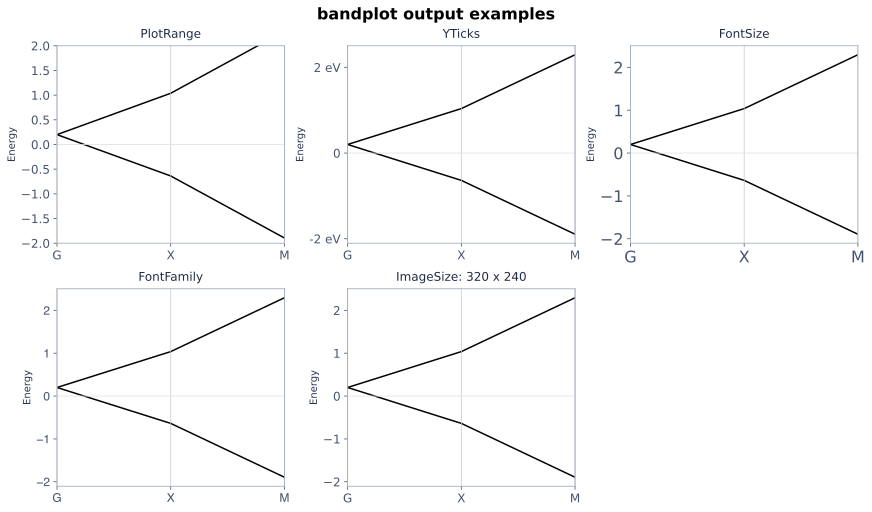
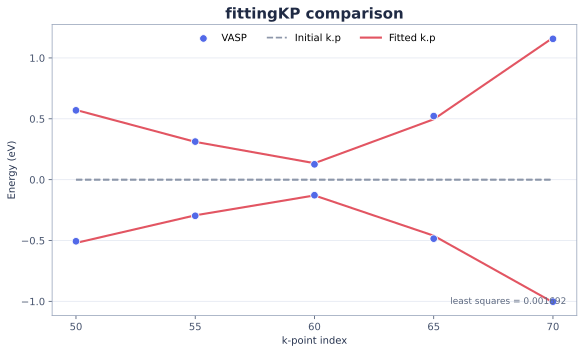

教程Tutorial
从手工输入到 MSGCorep 目录模型和交互能带。From manual input to an MSGCorep catalog model and interactive bands.
SYMMETRY → INVARIANT SPACE → HAMILTONIAN
从（共）表示矩阵构造满足对称性约束的 k·p 哈密顿量，并通过 Python 或 Web 完成目录输入、高对称路径、能带和数据分析。 Construct symmetry-constrained k·p Hamiltonians from (co)representation matrices, then use Python or the Web application for catalog input, high-symmetry paths, bands, and data analysis.
从手工输入到 MSGCorep 目录模型和交互能带。From manual input to an MSGCorep catalog model and interactive bands.
模型构造、能带与拟合、实用函数三个主题。Three topics: model construction, bands and fitting, and utilities.
9 个功能条目，每个条目都给出对应的 Python/Web 示例。Nine feature entries, each with its corresponding Python/Web example.
先在项目目录创建虚拟环境，再一次安装 Python 核心、MSGCorep 目录、Web、静态能带绘图和 VASP 拟合，系统 Python 不会被修改。First create a virtual environment in the project directory, then install the Python core, MSGCorep catalog, Web app, static band plotting, and VASP fitting together without modifying the system Python environment.
cd /path/to/MagneticKP1.2/Python-Web-Testing
python3 -m venv env
source env/bin/activate
python -m pip install --upgrade pip
python -m pip install --find-links dist \
dist/magnetickp-1.2.0-py3-none-any.whl
magnetickp-web保持Keep dist/msgcorep-0.1.0a0-py3-none-any.whl 与 MagneticKP wheel 位于同一目录，pip 会在这一次安装中自动找到它。beside the MagneticKP wheel; pip finds it automatically during this single installation.
使用完毕后运行Run deactivate 退出虚拟环境；以后再次使用时，进入本目录并运行to leave the virtual environment. To use MagneticKP again, return to this directory and run source env/bin/activate。.
默认打开Open http://127.0.0.1:8000。自定义地址和端口： by default. To choose another host and port:
MAGNETICKP_WEB_HOST=127.0.0.1 \
MAGNETICKP_WEB_PORT=18765 \
magnetickp-webimport msgcorep
from magnetickp import (
bandplot,
fittingKP,
kpHam,
)同一个安装命令同时提供目录接口、Web 命令、绘图和拟合功能。The same installation provides the catalog API, Web command, plotting, and fitting.
下面依次完成导入、C₂z 与反演输入、结果字典、Hamiltonian、能带路径和 MSG 13.65 的 B₂ 共表示。The steps below cover imports, C₂z and inversion input, the result dictionary, the Hamiltonian, a band path, and the B₂ corepresentation of MSG 13.65.
# Matrix 构造表示矩阵；latex 把结果转成 TeX || Matrix builds representation matrices; latex creates TeX output
from sympy import Matrix, latex
from magnetickp import kpHam
# kx、ky、kz 是 MagneticKP 约定的动量符号 || kx, ky, and kz are MagneticKP momentum symbols
from magnetickp.transforms import kx, ky, kz# 每个操作写成：(表示矩阵, 变换后的动量) || Write each operation as (matrix, transformed momentum)
inputdict = {
"Unitary": {
# C₂z 把 (kx, ky, kz) 变为 (-kx, -ky, kz) || C2z maps (kx, ky, kz) to (-kx, -ky, kz)
"C2z": (
Matrix([[0, 1], [-1, 0]]),
(-kx, -ky, kz),
),
# 反演把三个动量分量同时反号 || Inversion reverses all momentum components
"Inversion": (
Matrix([[1, 0], [0, -1]]),
(-kx, -ky, -kz),
),
}
}# 先解析并保存对称性，之后可重复计算不同阶数 || Parse and store the symmetries for reuse at other orders
model = kpHam(inputdict)
# 整数 1 表示同时保留零阶和一阶项 || Integer 1 keeps both zeroth- and first-order terms
result = model.getkpHam(1)
# 先查看结果字典有哪些可用字段 || Inspect the fields available in the result dictionary
print(list(result))['ham', 'NumberOfParameters', 'korder', 'dim']# ham 是 SymPy Matrix，可以继续代入参数或求本征值 || ham is a SymPy Matrix ready for substitution or diagonalization
ham = result["ham"]
print(ham)
# latex(...) 生成可粘贴到论文中的 TeX 字符串 || latex(...) creates a TeX string for a paper
print(latex(ham))Matrix([[e_1, kx*t_1 + ky*t_2 - I*kz*t_3],
[kx*t_1 + ky*t_2 + I*kz*t_3, e_1]])在 Web 手工模式输入同一组对称性，计算后把下面文本粘贴到“高对称路径”。标签使用普通键盘可输入的 G、X、Y、Z。Enter the same symmetries in Web manual mode. After solving, paste the following text into High-symmetry path. The labels use ordinary keyboard characters G, X, Y, and Z.
G:0,0,0 -> X:1/3,0,0;
G:0,0,0 -> Y:0,1/3,0;
G:0,0,0 -> Z:0,0,1/3import msgcorep
from magnetickp.catalog import (
build_catalog_core_input,
corepresentation_catalog,
)
# 先列出双值共表示，确认要使用的整数编号 || List double-valued corepresentations and inspect their integer indices
rows = corepresentation_catalog("13.65", "B")["double"]
for row in rows:
print(row["index"], row["label"], row["dimension"])
# 用整数 index=1 选择 B₂，不需要键盘输入下标字符 || Select B2 with integer index 1; no subscript character is needed
core_input, selection, group_input = build_catalog_core_input(
space_group=13,
magnetic_group="13.65",
k_name="B",
representation_family="double",
representations=[{"index": 1}],
coordinate_basis="cartesian",
)
# group_input 保留 MSGCorep 给出的完整群结构信息 || group_input preserves the full group structure supplied by MSGCorep
result = kpHam(core_input).getkpHam(1, group_input=group_input)
# selection 记录实际选中的表示；ham 是最终一阶模型 || selection records the chosen representation; ham is the final first-order model
print(selection["representations"])
print(result["ham"])1 B2 2
[{'index': 1, 'label': 'B2', 'multiplicity': 1, 'dimension': 2}]
Matrix([[e_1, kx*t_1 + ky*t_2 - I*kz*t_3],
[kx*t_1 + ky*t_2 + I*kz*t_3, e_1]])手工提供对称操作时使用Use kpHam；只求一个齐次阶时调用 for manual symmetry input, call getkpHam([n])；从 MSGCorep 取得表示时使用目录接口。 for one homogeneous order, and use the catalog interface for MSGCorep representations.
inputdict 格式format# 普通对称性条目：(表示矩阵, 动量变换) || Ordinary entry: (representation matrix, momentum map)
inputdict = {
"Unitary": {
"label": (D, momentum_image),
# 连续对称性多一个生成参数 theta || A continuous symmetry adds the generator parameter theta
"CInfinity": (D_theta, unchanged_momentum, theta),
},
"Antiunitary": {
# 这里只写矩阵；复共轭由求解器自动处理 || Supply only the matrix; the solver applies complex conjugation
"label": (D, momentum_image),
},
"AntisymmetryUnitaryTest": {
# 反对称操作满足 D H(k') D^-1 = -H(k) || An antisymmetry satisfies D H(k') D^-1 = -H(k)
"label": (D, momentum_image),
},
"AntisymmetryAntiunitaryTest": {
# 反幺正反对称操作同时包含复共轭和负号 || Antiunitary antisymmetry combines conjugation with a minus sign
"label": (D, momentum_image),
},
}| 项目Item | 要求Requirement |
|---|---|
D | 所有表示矩阵必须具有相同维数。All representation matrices must have the same dimension. |
momentum_image | 写成 1、2 或 3 个线性动量表达式，例如Use one, two, or three linear momentum expressions, for example (-kx, -ky, kz)。. |
Antiunitary | 只输入矩阵部分；复共轭由求解器处理。Supply only the matrix part; the solver applies complex conjugation. |
CInfinity | 放在Place it in Unitary中，值为 with value (D_theta, k_image, theta)，当前动量必须保持不变。; momentum must currently remain unchanged. |
from sympy import I, diag, exp, symbols
from magnetickp import kpHam
from magnetickp.transforms import kz
# theta 是连续旋转角，不是待拟合的 Hamiltonian 参数 || theta is a rotation angle, not a Hamiltonian fitting parameter
theta = symbols("theta", real=True)
# 两个基矢在旋转下分别获得相反的半角相位 || The two basis states acquire opposite half-angle phases
D_theta = diag(exp(-I*theta/2), exp(I*theta/2))
inputdict = {
"Unitary": {
# 当前连续对称性实现要求动量 kz 保持不变 || The current continuous-symmetry interface requires kz to remain unchanged
"CInfinity": (D_theta, (kz,), theta),
}
}
# 计算到一阶并直接取出 Hamiltonian || Solve through first order and extract the Hamiltonian
print(kpHam(inputdict).getkpHam(1)["ham"])Matrix([[e_1 + e_2 + kz*t_1 + kz*t_2, 0],
[0, e_1 - e_2 + kz*t_1 - kz*t_2]])Python 负责构造 Hamiltonian、高对称路径、读取数据和数值拟合；交互调整参数并即时看能带时，Web 版更方便。Python constructs Hamiltonians and high-symmetry paths and handles data and numerical fitting; the Web app is the convenient choice for interactively adjusting parameters and viewing bands.
highSymmetryKPath自动根据 K 点的小陪群计算高对称线。Automatically calculate high-symmetry lines from the little co-group at K.
bandManipulateWeb 参数滑块对应交互能带工作流。Web parameter sliders provide the interactive-band workflow.
bandplot内置的一行式静态能带绘图函数。Built-in one-call static band plotting.
getGenerator由有限群的群元、单位元和乘法函数求一组生成元。Find a generating subset from finite-group elements, an identity, and a multiplication function.
kpHamkpHam(inputdict)解析对称输入并创建可重复求不同动量阶数的模型对象。整数阶数包含从 0 到该阶的所有齐次项。Parse symmetry input and create a model that can be solved at multiple momentum orders. An integer order includes every homogeneous order from zero through that order.
# 1 表示求零阶和一阶的总 Hamiltonian || Integer 1 requests the combined zeroth- and first-order Hamiltonian
result = kpHam(inputdict).getkpHam(1)
# ham：矩阵；korder：包含的阶；dim：矩阵维数；参数数目：自由系数个数 || ham is the matrix; korder lists orders; dim is matrix size; NumberOfParameters counts free coefficients
print(result["ham"])
print(result["korder"], result["dim"], result["NumberOfParameters"])Matrix([[e_1, kx*t_1 + ky*t_2 - I*kz*t_3],
[kx*t_1 + ky*t_2 + I*kz*t_3, e_1]])
[0, 1] 2 4GETkpHammodel.getkpHam([order])Python 中用阶数列表选择指定齐次项；这对应只取 n 阶的旧式调用。In Python, pass a list of orders to select specific homogeneous terms; this is the counterpart of the legacy homogeneous-order call.
# 用列表 [1] 明确指定“只保留一阶”，区别于整数 1 || List [1] means first order only, unlike integer 1
result1 = model.getkpHam([1])
print(result1["ham"])
# 返回的 korder 应为 [1]，不包含零阶 || The returned korder is [1], with no zeroth-order term
print(result1["korder"])Matrix([[0, kx*t_1 + ky*t_2 - I*kz*t_3],
[kx*t_1 + ky*t_2 + I*kz*t_3, 0]])
[1]interfaceRepcorepresentation_catalog(...) + build_catalog_core_input(...)先列出表示编号，再构造 MSG 13.65、B 点、B₂ 共表示的一阶模型；用户不需要输入特殊下标字符。List the representation indices first, then construct the first-order B₂ model at B in MSG 13.65; no special subscript characters are required as input.
import msgcorep
from magnetickp import kpHam
from magnetickp.catalog import (
build_catalog_core_input,
corepresentation_catalog,
)
# 第一步：打印目录，先确认整数编号和表示维数 || Step 1: print the catalog and inspect integer indices and dimensions
rows = corepresentation_catalog("13.65", "B")["double"]
for row in rows:
print(row["index"], row["label"], row["dimension"])
# 第二步：用 index=1 选择目录中显示的 B₂ || Step 2: select the displayed B2 entry with index 1
core_input, selection, group_input = build_catalog_core_input(
space_group=13,
magnetic_group="13.65",
k_name="B",
representation_family="double",
representations=[{"index": 1}],
coordinate_basis="cartesian",
)
# 第三步：从目录转换后的对称性构造一阶模型 || Step 3: build a first-order model from the catalog-derived symmetries
ham = kpHam(core_input).getkpHam(1, group_input=group_input)["ham"]
# 下面三行用于核对 K 点坐标、群阶、约束数和结果矩阵 || Verify the k-point coordinate, group order, constraint count, and Hamiltonian
print(selection["coordinate"]["coordinate"])
print(selection["group_order"], selection["constraint_count"])
print(ham)1 B2 2
['-1/2', '0', '0']
4 2
Matrix([[e_1, kx*t_1 + ky*t_2 - I*kz*t_3],
[kx*t_1 + ky*t_2 + I*kz*t_3, e_1]])highSymmetryKPathhigh_symmetry_k_path(inputdict, ...)自动根据 K 点的小陪群计算高对称线。下面使用 MSG 191.234 的单值 K₅ ⊕ K₆，与目录输入一起生成路径。Automatically calculate high-symmetry lines from the little co-group at K. The example uses the single-valued K₅ ⊕ K₆ representation of MSG 191.234 and generates the path from catalog input.
from magnetickp import format_band_path, high_symmetry_k_path, kpHam
from magnetickp.catalog import build_catalog_core_input
# K₅ 与 K₆ 均用上面目录中显示的整数编号选择 || Select K5 and K6 using the integer indices shown by the catalog
core_input, selection, group_input = build_catalog_core_input(
space_group=191,
magnetic_group="191.234",
k_name="K",
representation_family="single",
representations=[{"index": 5}, {"index": 6}],
coordinate_basis="fractional",
)
# return_data=True 同时返回方向、子群阶和可粘贴到 Web 的路径 || return_data=True also returns directions, subgroup orders, and a Web-ready path
path_data = high_symmetry_k_path(core_input, return_data=True)
# 依次查看候选方向、小陪群阶、各高对称线的子群阶 || Inspect candidate directions, little co-group order, and line subgroup orders
print(path_data["directions"])
print(path_data["little_cogroup_order"])
print([line["subgroup_order"] for line in path_data["line_data"]])
# 转成可直接粘贴到 Web 的路径文本 || Format a path that can be pasted directly into the Web app
print(format_band_path(path_data["path"]))
# 路径计算与 Hamiltonian 构造使用同一个 core_input || Use the same core_input for the path and Hamiltonian
ham = kpHam(core_input).getkpHam(1, group_input=group_input)["ham"]
print(ham.shape, selection["representations"])((0, 0, 1), (1, 1, 0))
24
[12, 8]
L1-:0,0,-1/10 -> K:0,0,0; K:0,0,0 -> L1+:0,0,1/10;
L2-:-1/10,-1/10,0 -> K:0,0,0; K:0,0,0 -> L2+:1/10,1/10,0
(4, 4) [{'index': 5, 'label': 'K5', ...}, {'index': 6, 'label': 'K6', ...}]bandManipulateInteractive bandsPython 构造 Hamiltonian；需要交互查看参数变化时，在 Web 手工模式输入相同对称性并计算，然后输入 G–X 路径。Construct the Hamiltonian in Python. For interactive parameter exploration, enter the same symmetries in Web manual mode, solve, and enter the G–X path.
G:0,0,0 -> X:1/3,0,0bandplotbandplot(hamiltonian, path, parameters, ...)bandplot 是内置的静态能带绘图函数。给出 Hamiltonian、路径和参数值后，一次调用就会完成路径采样、本征值计算和绘图；默认把路径坐标视为倒易分数坐标并乘以 2π。bandplot is the built-in static band plotting function. One call performs path sampling, eigenvalue calculation, and plotting from a Hamiltonian, path, and parameter values. Path coordinates are reciprocal fractional coordinates by default and are multiplied by 2π.
from sympy import Matrix
from magnetickp import bandplot, kpHam
from magnetickp.transforms import kx, ky, kz
plot_input = {
"Unitary": {
"C2z": (
Matrix([[0, 1], [-1, 0]]),
(-kx, -ky, kz),
),
"Inversion": (
Matrix([[1, 0], [0, -1]]),
(-kx, -ky, -kz),
),
}
}
# 得到教程中 C₂z + 反演约束的一阶两能带模型 || Build the tutorial's first-order two-band model constrained by C2z and inversion
ham = kpHam(plot_input).getkpHam(1)["ham"]
# 取出 Hamiltonian 中的四个模型参数 || Extract the four model parameters from the Hamiltonian
e_1, t_1, t_2, t_3 = sorted(ham.free_symbols - {kx, ky, kz}, key=str)
# 明确写出每个参数的数值，便于核对和修改 || Write every parameter value explicitly for easy checking and editing
rules = {
e_1: 0.2,
t_1: 0.4,
t_2: 0.6,
t_3: 0.8,
}
# 每段写成：(起点, 终点, (起点标签, 终点标签)) || Each segment is (start, end, (start label, end label))
path = [
((0, 0, 0), (1/3, 0, 0), ("G", "X")),
((1/3, 0, 0), (1/3, 1/3, 0), ("X", "M")),
]
# 一行完成采样、本征值计算和绘图 || One call samples the path, calculates eigenvalues, and plots the bands
bandplot(ham, path, rules, subdivisions=30)# 以下五次一行调用分别对应 Mathematica 文档中的五个选项示例 || These five one-line calls match the five option examples in the Mathematica page
# PlotRange：限制能量显示范围 || PlotRange: restrict the displayed energy range
bandplot(ham, path, rules, ylim=(-2, 2))
# YTicks：指定刻度位置和显示文字 || YTicks: set tick positions and labels
bandplot(ham, path, rules, yticks=([-2, 0, 2], ["-2 eV", "0", "2 eV"]))
# FontSize：改变坐标刻度字号 || FontSize: change the tick-label size
bandplot(ham, path, rules, fontsize=32)
# FontFamily：改变坐标刻度字体 || FontFamily: change the tick-label font
bandplot(ham, path, rules, fontfamily="Helvetica")
# ImageSize：默认 100 dpi 时对应 320 × 240 像素 || ImageSize: 320 by 240 pixels at the default 100 dpi
bandplot(ham, path, rules, figsize=(3.2, 2.4))
PlotRange、YTicks、FontSize、FontFamily 和 ImageSize。Computed output: PlotRange, YTicks, FontSize, FontFamily, and ImageSize, in order.vaspEigread_vasp_eigenval(path, efermi, spin, start_band, end_band)read_vasp_eigenval 是内置的 EIGENVAL 读取函数。spin 和 band 编号均从 1 开始，并从每个能量中减去 efermi。read_vasp_eigenval is the built-in EIGENVAL reader. spin and band numbers are one-based, and efermi is subtracted from every energy.
from magnetickp import read_vasp_eigenval
# 一次调用读取前两条能带；返回 [(k 点, [能量, ...]), ...] || One call reads the first two bands and returns [(k point, [energies...]), ...]
eigdata = read_vasp_eigenval(
"EIGENVAL", efermi=0, spin=1,
start_band=1, end_band=2,
)
print(len(eigdata), eigdata[0])90 ((0.0, 0.0, 0.0), [-65.579404, -39.299325])fittingKPfittingKP(hamiltonian, eigenval_path, kpoint_indices, ...)fittingKP 是内置拟合函数。Hamiltonian 先由 kpHam 构造；EIGENVAL 是 VASP 计算目录中保存 k 点和能量的输出文件。再给出从 1 开始的 k 点编号即可拟合全部自由参数，默认初值均为零。fittingKP is the built-in fitting function. Construct the Hamiltonian with kpHam; EIGENVAL is the VASP output file containing k points and energies. Then provide one-based k-point record numbers to fit every free parameter, using zero initial values by default.
kpoint_center 是局域 k·p 模型的展开点。函数会先从 EIGENVAL 坐标减去该点，再代入由 kpHam 得到的 Hamiltonian，不需要手工平移动量。kpoint_center is the expansion point of the local k·p model. The function subtracts it from EIGENVAL coordinates before substituting them into the Hamiltonian returned by kpHam; no manual momentum shift is needed.
from magnetickp import fittingKP, kpHam
from magnetickp.catalog import build_catalog_core_input
# 从 MSGCorep 目录取得 MSG 156.50 在 K 点的 K₅ ⊕ K₆ 对称性输入 || Obtain K5 + K6 symmetry input at K in MSG 156.50 from the MSGCorep catalog
core_input, _, group_input = build_catalog_core_input(
space_group=156,
magnetic_group="156.50",
k_name="K",
representation_family="double",
representations=[{"index": 2}, {"index": 3}],
coordinate_basis="fractional",
)
# Hamiltonian 必须由 kpHam 构造；这里计算到二阶 || Construct the Hamiltonian with kpHam, here through second order
ham = kpHam(core_input).getkpHam(2, group_input=group_input)["ham"]
# EIGENVAL 是 VASP 生成的文件；这里假定它位于当前工作目录 || EIGENVAL is written by VASP; here it is in the current working directory
vasp_file = "EIGENVAL"
# K 点为 (1/3, 1/3, 0)；第 21 条起读取两条能带，因为 ham 是 2 × 2 || K is (1/3, 1/3, 0); read two bands from band 21 because ham is 2 by 2
fit = fittingKP(
ham,
vasp_file,
range(50, 71, 5),
efermi=-0.0072,
spin=1,
start_band=21,
kpoint_center=(1/3, 1/3, 0),
)
print(fit["fitted_parameters"])
print(fit["initial_least_squares"])
print(fit["fitted_least_squares"], fit["converged"]){e_1: 0.00283595, e_2: 0.13242718,
r_1: 2.37307175, r_2: 2.49946329,
r_3: -0.02661428, r_4: 0.0,
r_5: 0.0, r_6: 0.0, t_1: 5.57394006}
3.6511886991089995
0.001692172786575689 True
getGeneratorget_generators(elements, identity, multiply)下面的贪心算法复现四阶加法群示例。The greedy routine below reproduces the additive group of order four.
def group_closure(generators, identity, multiply):
# 从当前生成元出发，反复做乘法直到不再出现新群元 || Repeatedly multiply until the generators produce no new group elements
known = [identity]
changed = True
while changed:
changed = False
for left in tuple(known) + tuple(generators):
for right in tuple(known) + tuple(generators):
value = multiply(left, right)
if value not in known:
known.append(value)
changed = True
return known
def get_generators(elements, identity, multiply):
# 依次加入尚未生成的群元，得到一组贪心生成元 || Greedily add elements that are not generated yet
generators = []
generated = group_closure(generators, identity, multiply)
for element in elements:
if element == identity or element in generated:
continue
generators.append(element)
generated = group_closure(generators, identity, multiply)
if set(generated) == set(elements):
break
return generators
# Z4 的群运算是模 4 加法；单个元素 1 就能生成整个群 || Z4 uses addition modulo 4; element 1 generates the whole group
print(get_generators(range(4), 0, lambda a, b: (a + b) % 4))[1]按空间群、BNS 磁空间群、k 点和共表示编号选择；支持直和重数及笛卡尔/分数坐标。Select by space group, BNS magnetic group, k point, and corepresentation index, with direct-sum multiplicities and Cartesian/fractional coordinates.
输入幺正、反幺正、反对称和连续对称操作。Enter unitary, antiunitary, antisymmetry, and continuous symmetry operations.
显示 Hamiltonian、TeX、参数列表和 JSON 下载。Display the Hamiltonian, TeX, parameter list, and JSON download.
目录模型自动填入局域高对称路径；手工模型可直接输入路径，参数滑块和本征值在浏览器中更新。Catalog models receive a generated local high-symmetry path; manual models accept a typed path, while sliders and eigenvalues update in the browser.
换一个关键词，或按 Esc 清空搜索。Try another term, or press Esc to clear the search.